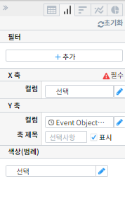
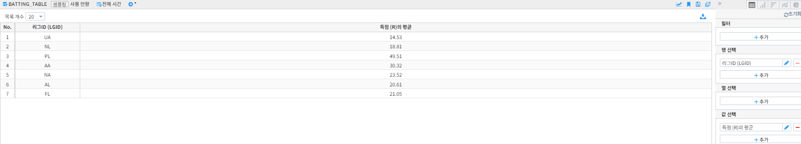
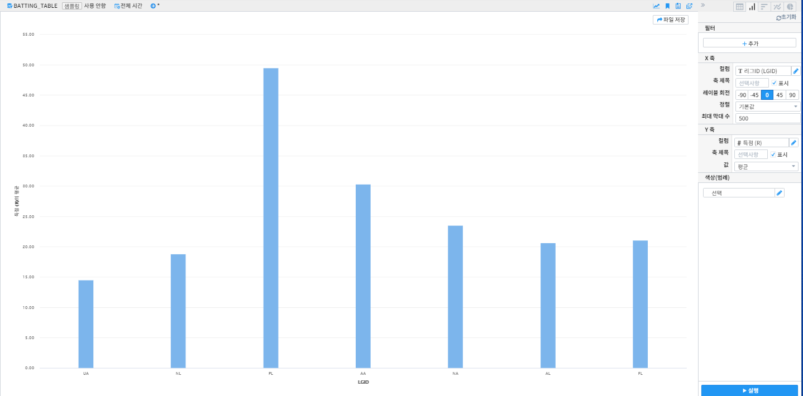
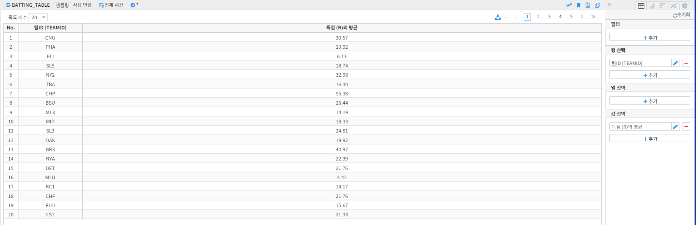
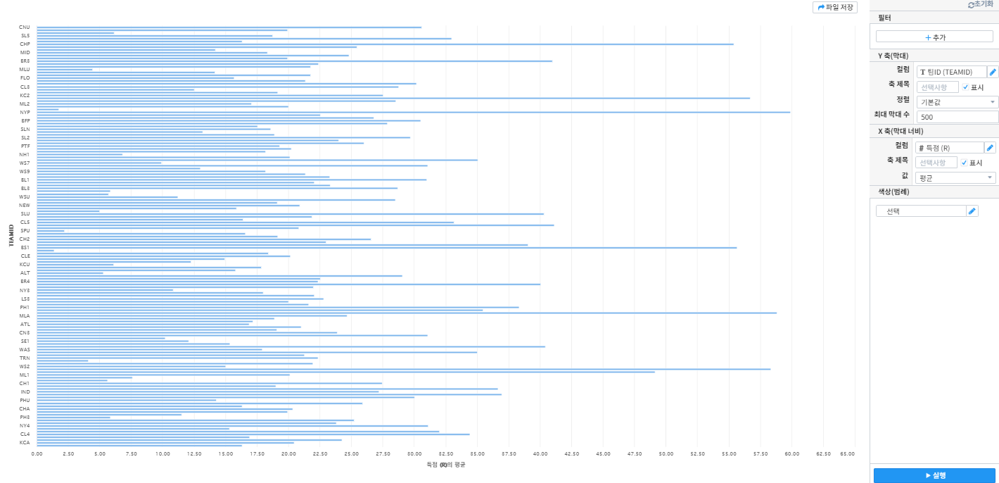
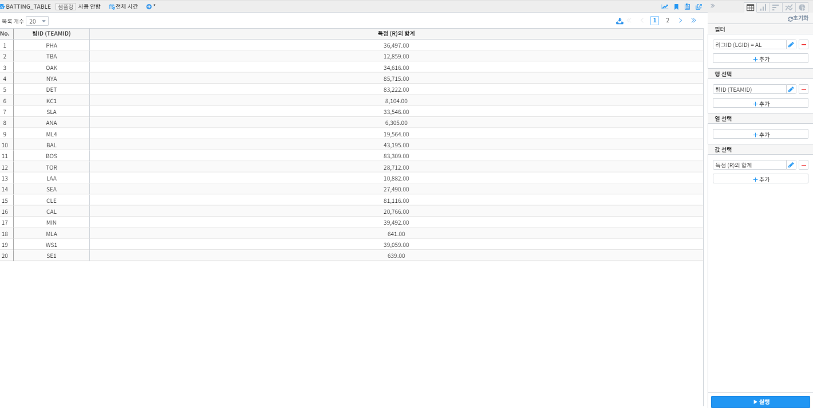
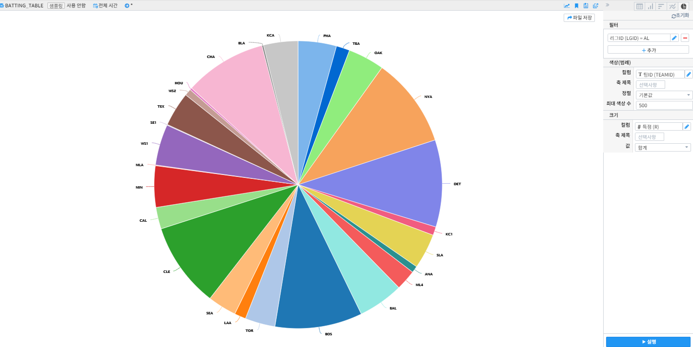
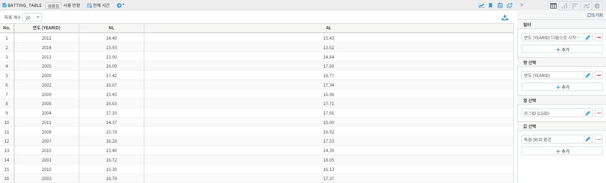
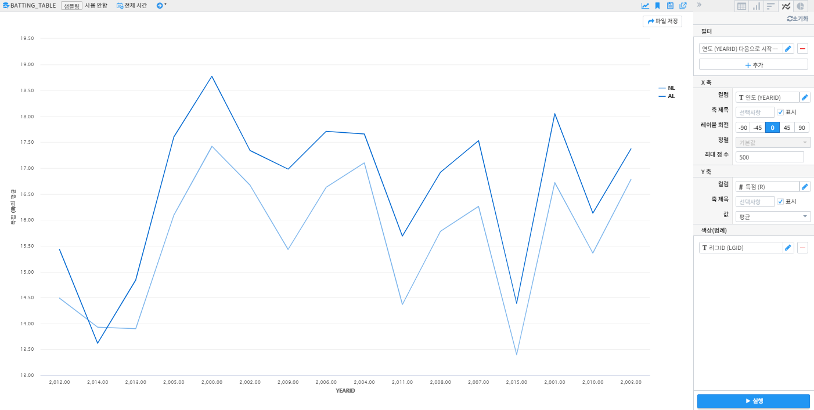

피벗 결과를 차트로 분석하기¶
차트 기능 구성¶
차트 기능 구성은 다음과 같습니다.
필터¶
사용자는 필터를 사용하여 피벗 실행의 대상이 되는 데이터의 범위를 제한할 수 있습니다. 사용자는 특정 필드의 값의 범위를 설정함으로써, 피벗 실행의 대상이 되는 데이터를 제한하게 됩니다. 예를 들어, 인터넷 서비스 로그에서 서비스 실패 원인을 분석하기 위하여, 서비스가 성공한 로그는 분석 대상에서 제외하고자 할 경우, cause 필드의 값으로 ‘fail’이 포함된 로그로 필터를 설정할 수 있습니다. 필터 항목은 선택 사항이므로, 사용자가 필터를 설정하지 않으면 전체 데이터에 대하여 피벗이 실행됩니다. (테이블 설정과 동일)
X축¶
사용자가 피벗 차트의 X축에 대하여 설정할 수 있도록 지원합니다. 피벗 테이블의 “행 선택”에 대응되는 설정으로, 차트 유형에 따라 “X 축” 항목은 필수 항목일 수 있습니다. 이 때는 사용자가 반드시 설정하여야 합니다.
Y축¶
사용자가 피벗 차트의 Y축에 대하여 설정할 수 있도록 지원합니다. 피벗 테이블의 “값 선택”에 대응되는 설정으로, “Y 축” 항목은 이벤트의 개수가 default로 설정됩니다.
색상(범례)¶
사용자는 X 축에 표시되는 막대 그래프 각각의 값을 표시하는 범례를 추가하거나 삭제할 수 있습니다. 피벗 테이블의 “열 선택”에 대응되는 설정입니다.
분류에 대한 비교¶
‘분류’란 종류에 따라 가름이란 의미로 특정한 카테고리로 구분하고 이를 비교하는것을 의미합니다. 피벗 결과의 시각화에서 ‘분류에 대한 비교’는 각 항목간에 영향을 받지 않도록 구성해 서로의 절대적인 값을 표현합니다. 이를 통해 피벗 분석으로 도출된 하나 또는 여러개의 결과 값을 특정 임계치나 다른 항목들과의 비교를 통해 사용자에게 통찰을 얻을 수 있도록 합니다.
막대 차트 - 세로막대형¶
막대 차트는 하나의 축을 기준으로 데이터를 시각화한 차트입니다. 데이터를 표현할 때 높이(또는 길이)로써 값을 표현하며, 이른 다른 값 또는 축과 비교합니다. 중점을 두고 관찰하고자 하는 항목에 대해 다른 색상을 이용하여 사용자의 시선을 끌 수 있으며 직관적으로 정보를 전달 할 수 있습니다.
리그별 득점 평균 피벗 테이블을 아래와 같이 형성 합니다.
우축 상단의 세로막대형 아이콘을 클릭해 리그별 득점 평균에 대한 비교를 세로 막대 차트로 나타냈습니다.
막대 차트 - 가로막대형¶
막대를 세로로 할 수도 있고 가로로 할 수도 있습니다. 가독성 면에선 항목이 적을수록 가로가 좋고 항목이 많을수록 세로가 좋습니다.
리그별 득점 평균 피벗 테이블을 아래와 같이 형성 합니다.
우축 상단의 막대형 아이콘을 클릭해 리그별 득점 평균에 대한 비교를 가로 막대 차트로 나타냈습니다.
구성에 대한 비교¶
‘구성’이란 몇 가지 부분이나 요소들을 모아서 일정한 전체를 이룬다는 뜻입니다. ‘분류에 대한 비교’는 각 항목간에 영향을 받지 않도록 구성하여 서로의 절대적인 값을 표현합니다.
원형 차트 (Pie Chart)¶
원형 차트는 항목이 차지하는 비율을 표시하는데 유용한 차트입니다.
AL리그 팀 중 팀별 득점 합계 피벗 테이블을 아래와 같이 형성 합니다.
우축 상단의 원형 차트 아이콘을 클릭해 팀별 득점 합계에 대한 비율을 원형 차트로 나타냈습니다.
시계열 데이터의 평가¶
‘시계열 데이터의 평가’는 시간이 경과함에 따라 일정한 간격을 기준으로 측정된 데이터를 평가 할 수 있는 차트를 의미합니다. 표현된 값에 대해 추세를 파악하고 미래의 상황을 예측하거나 현재에 대한 통찰력을 얻어 각종 의사결정을 하는데 도움을 받을 수 있습니다.
꺾은선 차트 (Line Chart)¶
꺾은선 차트는 자료의 흐름을 파악하고 비교할 때 유용합니다.
먼저 피벗 테이블을 활용해 2000년 이후 리그 별 평균 득점 추세를 확인 했습니다.
 우축 상단의 꺾은선 차트 아이콘을 클릭해 2000년 이후 리그 별 평균 득점 추세를 한눈에 확인할 수 있습니다.